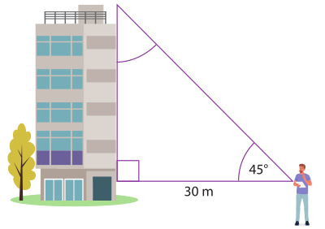
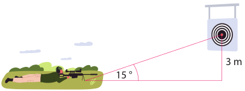

1.
Relaciona con líneas las funciones trigonométricas y su resultado.
2.
Dado el siguiente triángulo rectángulo, escoge el valor de la función trigonométrica
correspondiente.
3.
Completa con la razón trigonométrica correspondiente al ángulo complementario.
4.
Encuentra el valor de cada función trigonométrica para el ángulo θ.
5.
Construye los triángulos rectángulos que cumplan las siguientes condiciones.
6.
Realiza la siguiente rutina de aprendizaje.

7.
Una persona observa en un ángulo de 45° lo alto que es un edificio; si la persona mide 1,80 metros y está
ubicada a 30 metros de la base del edificio, ¿cuál es la altura en metros del edificio?

La altura del edificio es de: metros.
La altura del edificio es de: metros.
8.
En una práctica de tiro al blanco, el objetivo está en un pared a 3m del suelo. Si el tirador ve el
objetivo con un ángulo de 15°, ¿a qué distancia se encuentra de la pared?

La distancia a la que se encuentra el tirador es de: metros.
La distancia a la que se encuentra el tirador es de: metros.